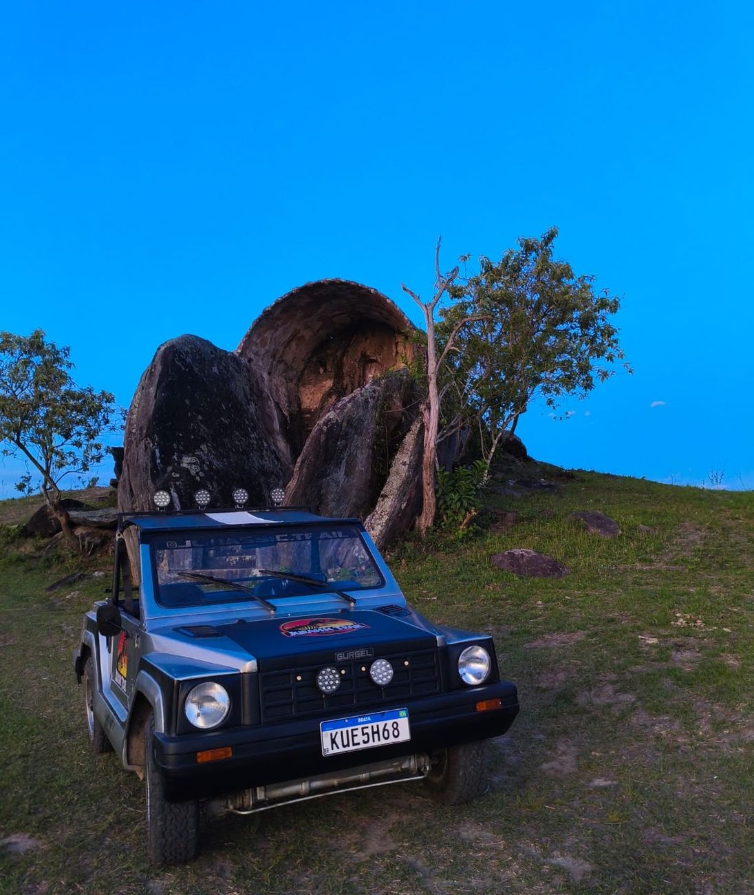
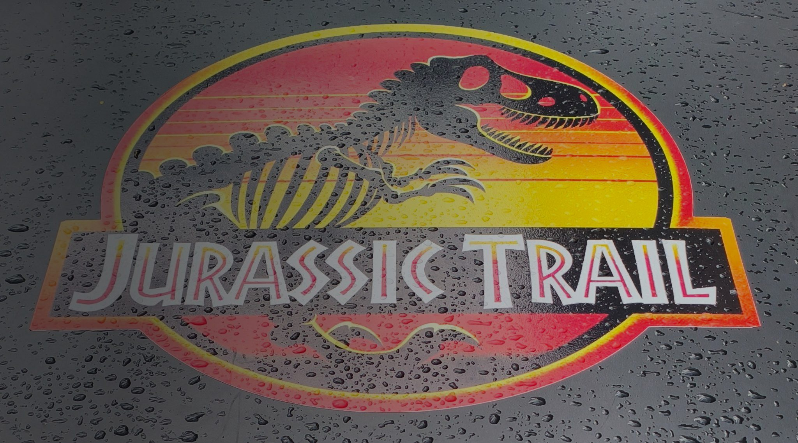
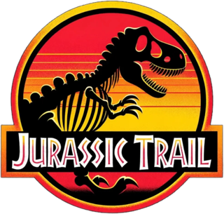
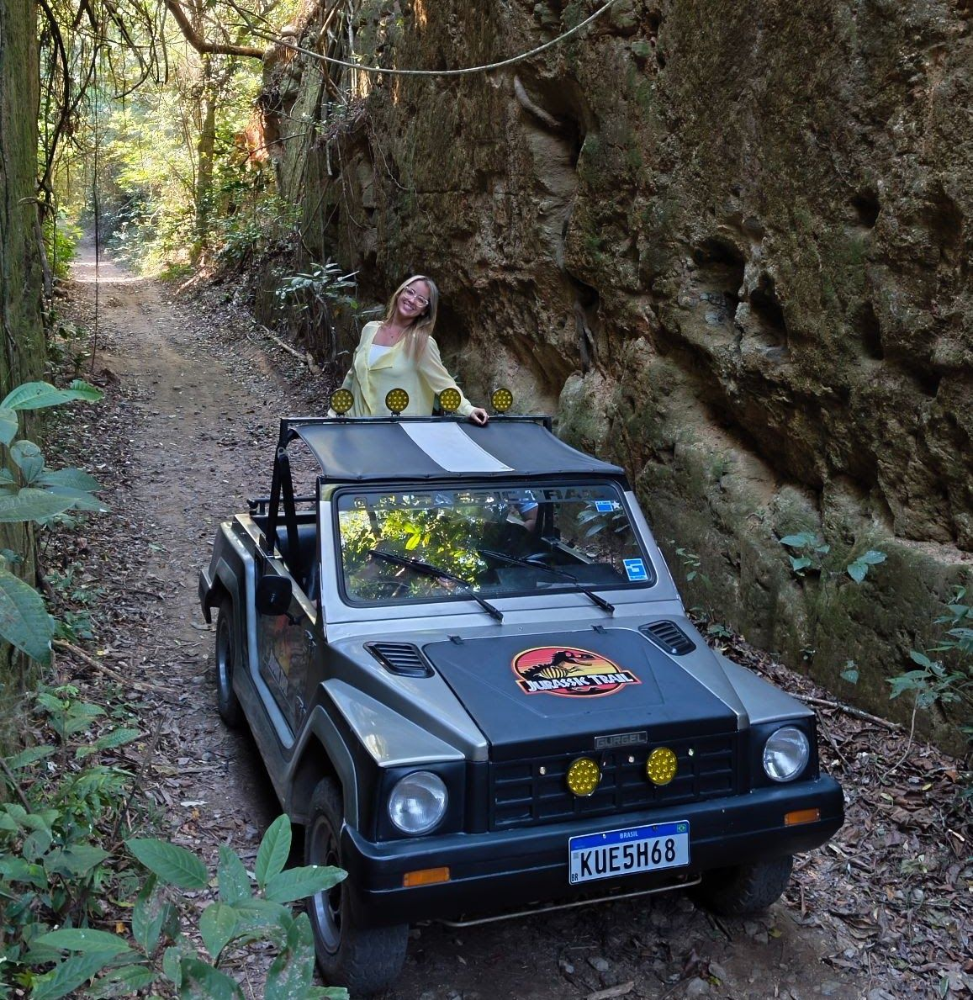
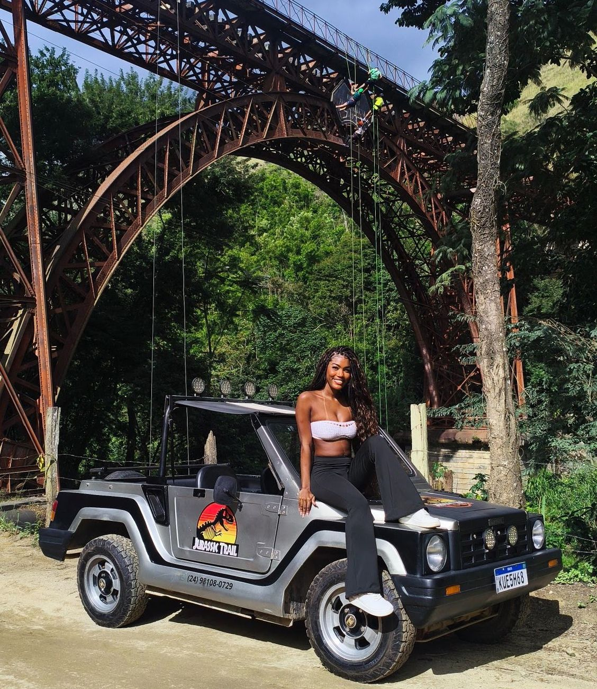
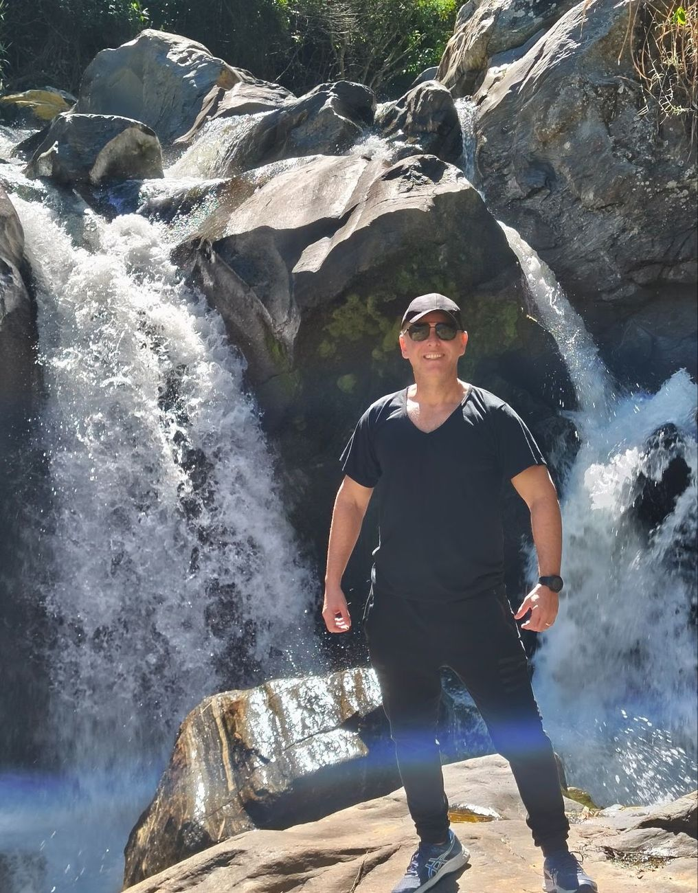
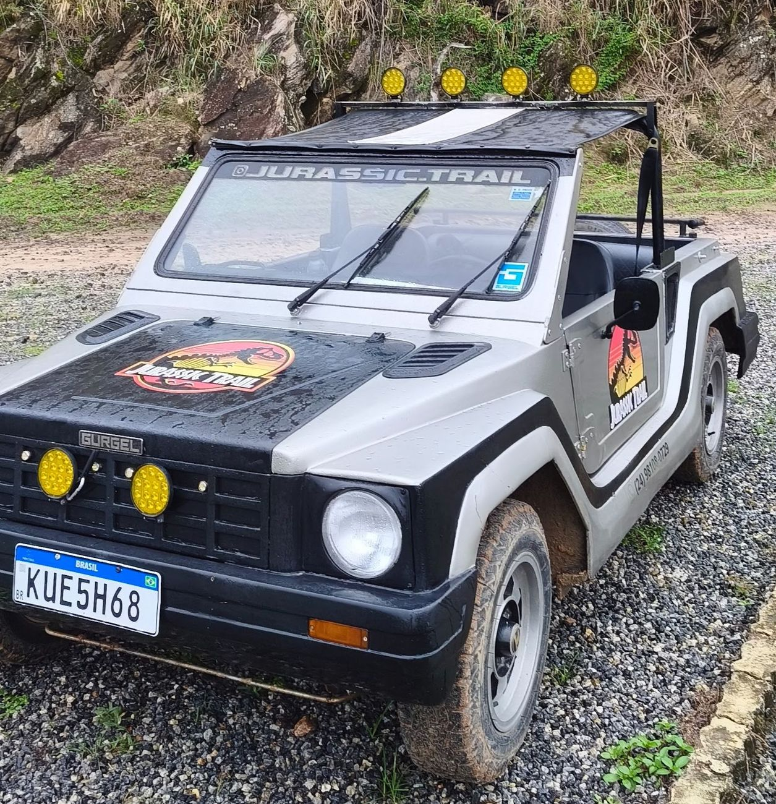
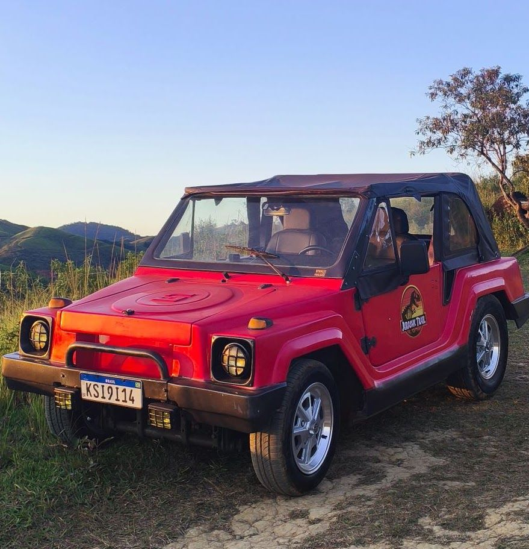

01 — R$ 160 (3 ou 4 pessoas) · Casal R$ 130
Rota Expressa
Saída e retorno na Rua Coberta, trecho off-road e parada única na Gruta dos Escravizados, com sessão de fotos.
- Gruta dos Escravizados
- Trecho off-road
- Sessão de fotos


Explore Miguel Pereira de um jeito diferente a bordo de legítimos veículos Gurgel, ícones da indústria automobilística brasileira, com a Jurassic Trail.
02 Sobre a Jurassic Trail
O Jurassic Trail une aventura, natureza e história em passeios por estradas e cenários marcantes da região, proporcionando momentos únicos, belas paisagens e registros inesquecíveis. Prepare-se para sair do comum e viver uma experiência sobre rodas, com o espírito de aventura e a autenticidade de um clássico nacional.
O Jurassic Trail nasceu do sonho de um casal que acredita que grandes aventuras ficam ainda melhores quando são compartilhadas. Transformamos nossa paixão pelos veículos Gurgel em uma iniciativa para valorizar o turismo de Miguel Pereira e manter viva a história de uma marca que representa a criatividade e a ousadia da indústria automobilística brasileira.
Viva essa experiência.

03 Rotas e reservas
Um passeio off-road cheio de história e natureza a bordo de um Gurgel X12, visitando pontos turísticos naturais e culturais, sempre com segurança e tranquilidade. Recomendamos levar: frutas ou lanchinhos, protetor solar, repelente, corta-vento ou agasalho leve e garrafinha de água.

01 — R$ 160 (3 ou 4 pessoas) · Casal R$ 130
Saída e retorno na Rua Coberta, trecho off-road e parada única na Gruta dos Escravizados, com sessão de fotos.

02 — R$ 330 (3 ou 4 pessoas) · Casal R$ 300
Passeio médio: experiência equilibrada, mesclando natureza, história e aventura, com maior tempo de trilha e contemplação.

03 — R$ 400 (3 ou 4 pessoas) · Casal R$ 370
Passeio longo: vivência completa de Miguel Pereira e região, explorando atrativos naturais e históricos em um dia de aventura.
04 História e curiosidades
A Gurgel Motores marcou a história da indústria automobilística brasileira com a visão de João Augusto Conrado do Amaral Gurgel, que acreditava na capacidade nacional de desenvolver veículos próprios, robustos e adaptados às condições do Brasil. Entre seus modelos mais emblemáticos está o Gurgel X12, um legítimo utilitário fora de estrada, que vai muito além da aparência de um buggy.
Diferentemente dos buggies tradicionais, o X12 foi concebido como um veículo utilitário de vocação fora de estrada, com estrutura própria, carroceria de fibra de vidro e soluções de engenharia desenvolvidas pela Gurgel. Sua proposta era enfrentar diferentes tipos de terreno com simplicidade, resistência e personalidade.
No Jurassic Trail, essa história ganha vida por meio de dois exemplares: o Carro 01, um Gurgel X12 1988, e o Carro 02, um Gurgel X12 1980. Mais do que automóveis clássicos, nossos Gurgel representam a criatividade, a ousadia e o orgulho de uma indústria genuinamente brasileira. A cada passeio, celebramos esse legado e construímos novas memórias sobre rodas!
Construído em 1897 e inaugurado em 29 de março de 1898, o Viaduto Ferroviário Paulo de Frontin fica em Vera Cruz, Miguel Pereira (RJ). Com 82 metros de comprimento e cerca de 32 metros de altura sobre o Rio Santana, foi projetado para a passagem dos trens da antiga Estrada de Ferro Melhoramentos do Brasil, integrando depois a Linha Auxiliar da Estrada de Ferro Central do Brasil. Hoje é um importante patrimônio histórico da região. Uma de suas curiosidades é a estrutura metálica de origem belga, com um arco central que forma uma curva impressionante — característica pela qual é reconhecido como um viaduto ferroviário singular no mundo.
Localizada em Governador Portela, distrito de Miguel Pereira, a Gruta dos Escravizados é um importante patrimônio histórico, cultural e ambiental. Construída no século XVIII por pessoas escravizadas, a gruta teria sido dedicada à devoção a Nossa Senhora da Penna, preservando marcas de fé e espiritualidade em meio às formações rochosas talhadas à mão. Em 1º de março de 2011, a área foi reconhecida como unidade de conservação municipal, com cerca de 34 mil m². Mais do que um ponto turístico, o local convida à reflexão sobre a memória da escravidão e a importância de preservar a história. Do alto, uma vista panorâmica de 360° revela todo o vale, com montanhas, vegetação e um pôr do sol de tirar o fôlego.


“Aventure-se além do caminho.”
05 Galeria de experiências
Cachoeiras cercadas pela natureza, mirantes com paisagens de tirar o fôlego e pontos históricos de Miguel Pereira: pôr do sol, cachoeiras, caminhos e trilhas. Toque em uma imagem para ver em tela cheia.
06 Por que a Jurassic Trail
Passeios a bordo de clássicos nacionais: um Gurgel X12 1988 e um Gurgel X12 1980.
Cachoeiras, mirantes e pontos históricos de Miguel Pereira, com segurança e tranquilidade.
Paradas para olhar a paisagem, fotografar e viver o momento.
Fale com a equipe pelo WhatsApp e tire suas dúvidas antes de reservar.
07 Depoimentos
Fez um passeio com a gente?
Em breve, os relatos de quem viveu a experiência aparecem aqui. Enquanto isso, acompanhe os registros dos passeios no Instagram.
08 Reservas
Conheça nossas rotas e faça sua reserva para viver uma aventura única pelos caminhos de Miguel Pereira a bordo de um legítimo Gurgel! Reservas pelo WhatsApp ou pelo Instagram @jurassic.trail.
Prefere escrever?
Consulte um passeio